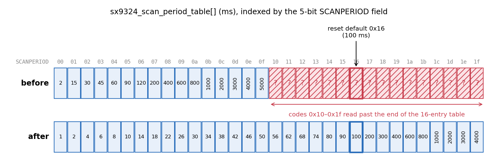
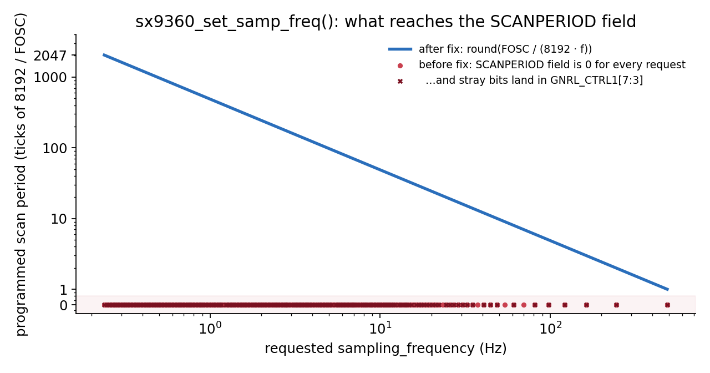
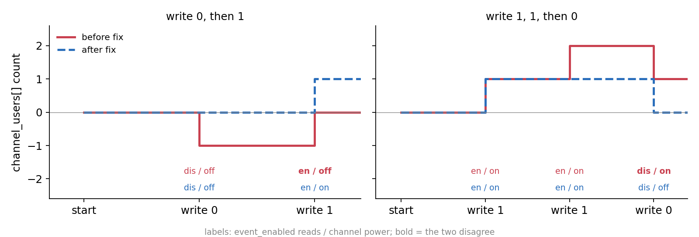

gantt
todayMarker off
dateFormat YYYY-MM-DD HH:mm
axisFormat %d %b
section sx9324
v1 in review (NAK + homework) :done, 2026-10-22 04:24, 2026-10-24 00:56
v2 :active, 2026-10-24 00:56, 2026-10-24 07:27
applied :milestone, 2026-10-24 07:27, 0d
section mcp3564
v1 in review (Reviewed-by) :done, 2026-10-22 04:24, 2026-10-24 00:28
v2 :active, 2026-10-24 00:28, 2026-10-24 07:28
applied :milestone, 2026-10-24 07:28, 0d
section sx9360
v1 in review :done, 2026-10-24 23:31, 2026-10-26 03:42
v2 :active, 2026-10-26 03:42, 2026-10-26 03:57
applied :milestone, 2026-10-26 03:57, 0d
section sx9500
v1 :active, 2026-10-24 23:26, 2026-10-26 05:07
applied :milestone, 2026-10-26 05:07, 0d
A NAK, Some Homework, and Four More Fixes
linux-kernel
lfx
iio
open-source
Four more of my IIO patches were applied this week: three in the Semtech SX9xxx proximity drivers and one in the MCP3564 ADC. This post covers the bugs, the review that shaped each fix, and what I learned from my first NAK.
A few days ago I wrote that kernel maintainers were much kinder than their reputation. This week a review of mine included the word “NAK”, followed by a homework assignment. I still stand by what I wrote.
Between 22 and 26 October, Jonathan Cameron applied four more of my patches to the fixes-togreg branch of iio.git. Three are in the Semtech SX9xxx capacitive proximity drivers (sx9324, sx9360 and sx9500). The fourth is in the Microchip mcp3564 ADC driver. All four are bug fixes with a Fixes: tag, and three of them are marked for stable kernels. Andy Shevchenko reviewed three of the four, and each review changed the patch for the better.
sx9324: a table that was half as long as it should be
The SX9324 polls for new samples when it has no interrupt line. To decide how long to sleep, the driver reads the scan period code from a register and uses it as an index into a table:
static int sx9324_wait_for_sample(struct sx_common_data *data)
{
...
val = FIELD_GET(SX9324_REG_GNRL_CTRL0_SCANPERIOD_MASK, val);
msleep(sx9324_scan_period_table[val]);
...
}The SCANPERIOD field is 5 bits wide, so it has 32 possible codes. The table had 16 entries. It had been copied from the SX9310 driver, where the same field is only 4 bits wide. Every code from 0x10 to 0x1f read past the end of the array, and the chip’s reset default is 0x16 (100 ms). In other words, a polled SX9324 with the default configuration slept for whatever number happened to sit in memory after the table.

0x16, is one of the codes that read past its end. The new values come from the period comments on the driver’s existing sx9324_samp_freq_table[].
The fix seemed simple: fill in all 32 periods, which the driver already documented in the comments of its sx9324_samp_freq_table[], and add a static_assert() so the two tables can never disagree in length again. My v1 packed the 32 values into three lines, as tightly as they would fit. Andy’s reply was short:
NAK to this hunk.
Homework:
read my comments regarding formatting such arrays in linux-iio@ mailing list
for last calendar year or so and summarize the idea.
That was my first NAK. To be honest it stung for a minute, and then I realised it was one of the most useful replies I had received. Andy hadn’t rewritten the table for me. He told me where the answer was and trusted me to find it. I replied within a few minutes to say I would do the homework.
I keep a local git mirror of the linux-iio archive, so the homework was a search through a year of Andy’s reviews. The idea turned up again and again, most clearly in a November 2025 review of a new frequency driver:
Make it power-of-two items per line, even with the comments to show the indexing, like
810, 1620, 2430, 3240, 4050, 4860, 5670, 6480, /* 0 - 7 */
Once I saw it, the reason was obvious. This table is indexed by a register value, so a reader has to be able to answer “what is entry 0x13?” at a glance. With eight entries per line and the code range in a comment, you can. With values packed to fill the line, you have to count, and a typo can hide for years. The v2 looked like this:
static const unsigned int sx9324_scan_period_table[] = {
1, 2, 4, 6, 8, 10, 14, 18, /* 0x00 - 0x07 */
22, 26, 30, 34, 38, 42, 46, 50, /* 0x08 - 0x0f */
56, 62, 68, 74, 80, 90, 100, 200, /* 0x10 - 0x17 */
300, 400, 600, 800, 1000, 2000, 3000, 4000, /* 0x18 - 0x1f */
};
static_assert(ARRAY_SIZE(sx9324_scan_period_table) == ARRAY_SIZE(sx9324_samp_freq_table));I also put the static_assert() on one line, as Andy suggested (“I would dare make it a single line”), added the Fixes: tag and Cc: stable, and rebased on fixes-togreg. Jonathan applied it a few hours after I sent it:
Looks good and matches what Andy asked about.
Applied to the fixes-togreg branch of iio.git.
Andy’s review of v2 arrived later that day. It had one more nit (“5 bit wide” should be “5-bit wide”) and ended with:
Haven’t checked if this is part of any ABI. Otherwise LGTM,
Reviewed-by: Andy Shevchenko <andriy.shevchenko@intel.com>
Jonathan didn’t ask me for a v3 to fix a hyphen. He replied “Tweaked and tagged.” and fixed it himself in his tree. Going from NAK to Reviewed-by: in two days, with the maintainer cleaning up the last nit for me, felt like a real reward for doing the homework properly.
mcp3564: a NULL pointer behind a fallback
The MCP3564 driver identifies its chip by reading ID registers. If the ID is not one it knows, for example on a newer part number, it falls back to the match data from the device tree:
flowchart TD
A[Read chip ID registers] --> B{Known ID?}
B -- yes --> C[chip_info from the driver's table]
B -- no --> D["spi_get_device_match_data()"]
D --> E{NULL?}
E -- "no: DT or id-table match" --> F[use chip_info]
E -- "yes: bound via driver_override" --> G["before: oops on chip_info->have_vref<br/>after: return -ENODATA"]
spi_get_device_match_data() returns NULL when the device was bound with driver_override and its name isn’t in the driver’s id table. The driver dereferenced the result unconditionally, so that case ended in a kernel oops. The fix is three lines:
adc->chip_info = spi_get_device_match_data(adc->spi);
+ if (!adc->chip_info)
+ return -ENODATA;
+
adc->have_vref = adc->chip_info->have_vref;Andy gave it a Reviewed-by: on v1, together with a request and a thought about the bigger picture:
Fine, but I hope we will have something to land to actually do it differently for the drivers that don’t want to use driver_override mechanism.
Reviewed-by: Andy Shevchenko <andriy.shevchenko@intel.com>
Please, shrink the commit message to the point.
He was right on both counts. A NULL check in every driver is a stopgap, not a design. And my v1 commit message took four paragraphs to say something that fits in one. The v2 message is half as long:
When the chip can’t be identified from its ID registers, the driver falls back to spi_get_device_match_data() and dereferences the result unconditionally. That returns NULL for a device bound through driver_override whose name isn’t in the id table, causing an oops.
Return -ENODATA in that case.
That taught me to write the shortest message that still explains the bug. Jonathan replied with a single word, “Applied”, which is my favourite word on the list.
sx9360: a frequency that always became zero
The SX9360 stores its scan period in two registers, GNRL_CTRL1 and GNRL_CTRL2, as an 11-bit count of ticks. One tick is 8192 cycles of the 4 MHz oscillator. So the period for a frequency f is
\[ \text{period} = \frac{F_\text{OSC}}{8192 \cdot f}. \]
The driver’s write function had the fraction upside down, and it scaled the micro-hertz part of the value wrongly:
reg = val * 8192 / SX9360_FOSC_HZ + val2 * 8192 / (SX9360_FOSC_MHZ);For any frequency the chip supports, val * 8192 / 4000000 is 0 in integer arithmetic. The val2 term always produces a multiple of 2048, so it never reaches the 11-bit period field, but it does spill into the bits of GNRL_CTRL1 above it. Above about 0.26 Hz of fractional part it also overflows an int. To make sure, I replayed both formulas for every frequency the driver advertises:

GNRL_CTRL1.
The new code computes the period the right way up, rounds to the closest tick, and rejects frequencies the chip can’t represent. While I was there, I noticed the advertised range didn’t match the comments next to it either: 4 MHz / 8192 is 488.28125 Hz, not 448.28125 Hz, and the minimum and step were wrong too. Before sending v1, I also checked in userspace that the default 102 ms period survived the round trip: 9.765625 Hz → period 50 → 9.765625 Hz.
Andy’s review of v1 was a series of short, precise questions:
unsigned int period;What’s the units for period? Seconds?
u64 freq_uhz;_uHz
freq_uhz = (u64)val * MICRO + val2;Read what units.h has for units of Hz.
Missing blank line. Always make guard()() to be standalone in the code.
None of these change what the code does, but each makes it easier to read. A variable called period in a function full of hertz and oscillator cycles should make a reader ask “in what?”. MICRO is a plain number, while MICROHZ_PER_HZ from <linux/units.h> says what it is converting. So v2 renamed the variable to period_ticks, said in a comment what a tick is, switched to freq_uHz and MICROHZ_PER_HZ, and gave guard(mutex) a line of its own:
freq_uHz = (u64)val * MICROHZ_PER_HZ + val2;
if (!freq_uHz)
return -EINVAL;
/* The register holds the scan period in ticks of 8192 FOSC cycles. */
period_ticks = DIV64_U64_ROUND_CLOSEST((u64)SX9360_FOSC_HZ * MICROHZ_PER_HZ,
freq_uHz * 8192);
if (!period_ticks || period_ticks > SX9360_REG_GNRL_SCANPERIOD_MAX)
return -EINVAL;
buf = cpu_to_be16(period_ticks);
guard(mutex)(&data->mutex);Andy also suggested that “at some point” the frequency table should become a plain array of ints. That is a cleanup rather than a fix, so I left it for a separate patch and said so below the --- line. Fifteen minutes after I sent v2, Jonathan replied:
Seems like you’ve addressed Andy’s comments (except for the ‘at some point’ one which is fine to leave for now). Looks good to me, so rather than keep track of this one I’m going to speculatively apply it to the fixes-togreg branch of iio.git and mark it for stable.
“Rather than keep track of this one” is a small phrase, but it says a lot. A maintainer has hundreds of threads to track, and a patch that clearly answers every review comment is one he can take off his list straight away. Writing a precise changelog is how I can make that easier for him.
sx9500: reference counts that drift
The SX9500 driver keeps reference counts of who is using each channel and the close/far interrupt. A channel is powered on when its count goes from 0 to 1, and off when it drops back to 0. sx9500_write_event_config() incremented or decremented these counts on every write to an event’s en attribute, even when the event was already in the requested state.
That lets the counts drift away from reality. Writing 0 to an event that is already disabled takes the count to −1. A following write of 1 brings it back to 0, which is not the 0 → 1 transition that turns the channel on. The event now reads as enabled, but the channel and its interrupt are off. Because raw reads share channel_users[], a raw read can then wait forever for a conversion that never starts. Writing 1 twice and then 0 does the opposite: the event reads as disabled but the channel stays on.

channel_users[] for two write sequences. Before the fix (red), redundant writes move the count, and the event state and channel power end up disagreeing. After the fix (blue, dashed), a write that doesn’t change state returns early.
The newer SX9xxx drivers share sx_common_write_event_config(), which already returns early when the state doesn’t change. The SX9500 predates that common code, so the fix brings it in line:
mutex_lock(&data->mutex);
+ /* The user counts must only change when the state does. */
+ if (data->event_enabled[chan->channel] == state) {
+ ret = 0;
+ goto out_unlock;
+ }
+
if (state) {I don’t have SX9500 hardware, so I checked both write sequences with a userspace model of the counting and said exactly that below the --- line. This was the only one of the four that went in as first sent. Jonathan’s reply in full:
Applied and marked for stable.
thanks
Jonathan
I hadn’t added Cc: stable to this one. Jonathan decided it deserved a backport and added the tag himself.
What these reviews taught me
Looking back over the four threads, very few of the review comments were about whether the code worked. They were about whether the next person could read it:
| Patch | Review comment | What I changed |
|---|---|---|
| sx9324 | Table formatting: NAK + homework | 8 entries per line with index comments |
| sx9324 | static_assert() on one line |
Joined the line |
| sx9324 | “5 bit” → “5-bit” | Jonathan fixed it while applying |
| mcp3564 | “Shrink the commit message to the point” | Four paragraphs → two |
| sx9360 | Units for period? |
period_ticks and a comment saying what a tick is |
| sx9360 | _uHz, use units.h |
freq_uHz, MICROHZ_PER_HZ |
| sx9360 | guard()() must stand alone |
Added a blank line |
| sx9360 | Table should be a plain int array | Deferred to a later cleanup, with agreement |
A few habits came out of this week:
- When a reviewer points you at the archive, read the archive. Andy’s homework took me longer than rewriting the table myself would have. But now I know a rule he applies to every indexed table, and I won’t need to be told again.
- Units belong in names.
period_ticks,freq_uHzandMICROHZ_PER_HZmake the code document itself. - The changelog is part of the patch. Each v2 listed every comment and who made it, and said what I hadn’t done and why. That is what let Jonathan apply the sx9360 fix fifteen minutes after it arrived.
- Say what you tested. All four patches say “Compile-tested only” under the
---line, along with whatever checking I could do without the hardware. Maintainers can only judge the risk of a patch if you’re honest about this.
Results
fixes-togreg on rc1, so the commit IDs may change.
| Patch | Tree | Reviewed by | Links |
|---|---|---|---|
| sx9324: fix out-of-bounds read of scan period table | iio fixes, stable | Andy Shevchenko | v1 · v2 · commit |
| mcp3564: reject devices without match data | iio fixes | Andy Shevchenko | v1 · v2 · commit |
| sx9360: fix sampling frequency write and available range | iio fixes, stable | Andy Shevchenko (v1) | v1 · v2 · commit |
| sx9500: ignore event config writes that don’t change state | iio fixes, stable | — | patch · commit |
That brings my total to thirteen applied patches. I have a few more SX9xxx patches on the list as I write this, a series that keeps the IRQ balanced across suspend and resume, and a hysteresis fix for the sx9310, so this family of drivers may get one more post.
Acknowledgements
Thank you to Andy Shevchenko, whose reviews are short, exact and always worth reading twice, and to Jonathan Cameron for his patience, his speed, and for fixing my hyphens. Thanks also to Shuah Khan for the mentorship that got me here.